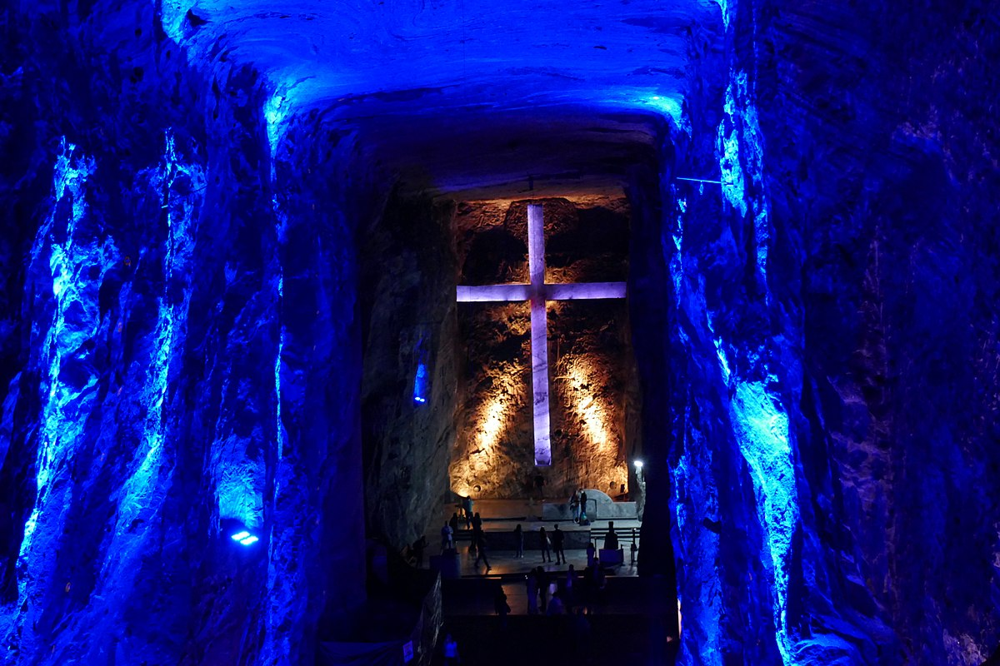
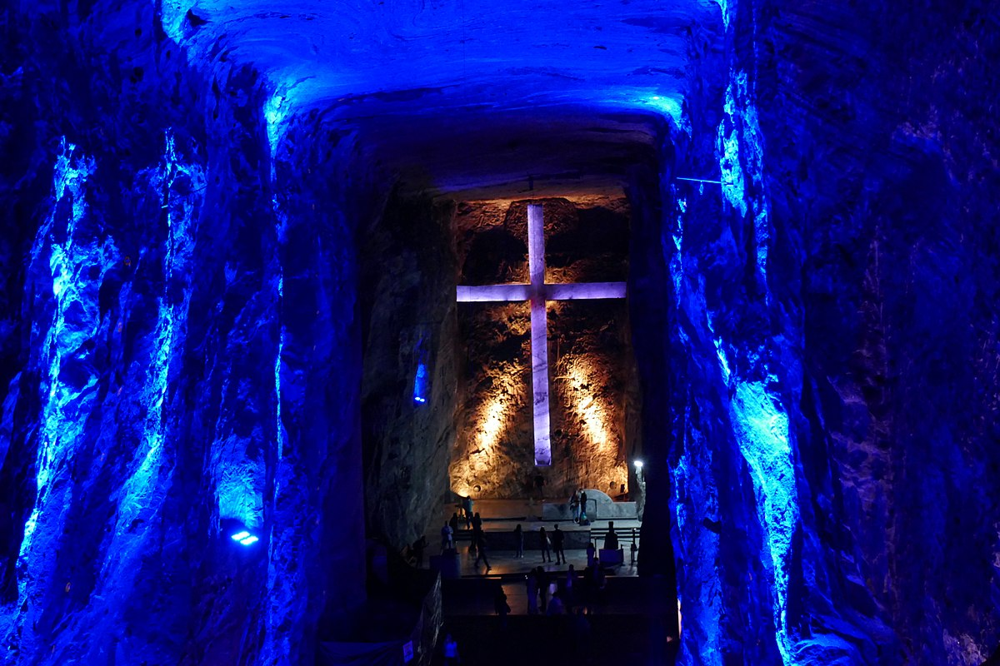
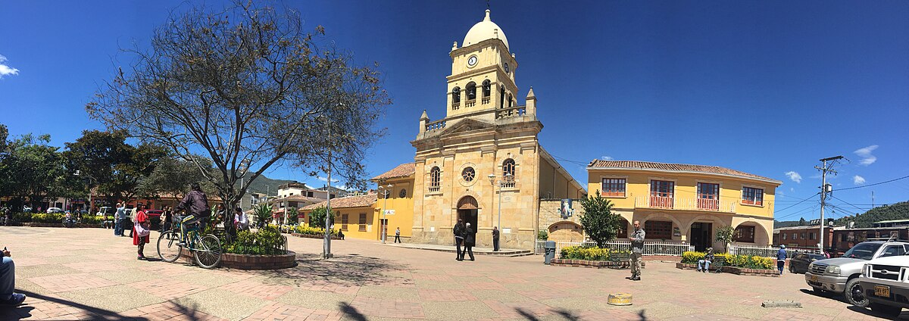
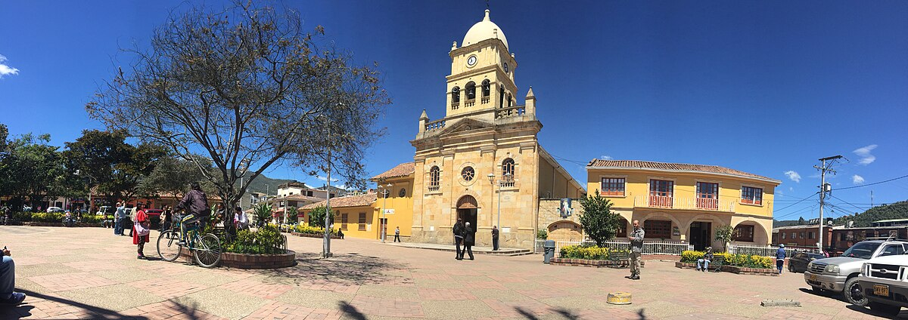

Fauna de Cundinamarca
La fauna de Cundinamarca es igualmente diversa y variada, gracias a la gran variedad de ecosistemas presentes en este departamento de Colombia. Algunas de las especies más representativas de la fauna cundinamarquesa incluyen:
Aves: Cundinamarca es hogar de una gran diversidad de aves, tanto residentes como migratorias. Entre las especies más destacadas se encuentran el cóndor andino, el águila arpía, el tucán, el colibrí, el carpintero, entre otros.
Es importante destacar que muchas de estas especies enfrentan amenazas debido a la pérdida de hábitat, la caza furtiva y otras actividades humanas. Por ello, es fundamental implementar medidas de conservación y protección para garantizar la supervivencia de la fauna cundinamarquesa y preservar la biodiversidad del departamento.
Cundinamarca alberga una gran diversidad de anfibios, como ranas venenosas (dendrobatidas), salamandras y sapos, del mismo modo, existe gran diversidad de insectos en Cundinamarca es muy amplia e incluye mariposas, escarabajos, abejas y muchos otros grupos
Galeria de imagenes
 

 
